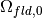
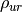
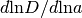

classylss.binding module¶
-
class
classylss.binding.Background(ClassEngine engine)¶ Bases:
object-
C¶
-
G¶
-
H0¶
-
N_ncdm¶ The number of distinguishable ncdm (massive neutrino) species.
-
N_ur¶ The number of ultra-relativistic species. This is equal to:
-
Neff¶ Effective number of relativistic species, summed over ultra-relativistic and ncdm species.
-
Omega0_b¶ Current density parameter for photons, .
-
Omega0_cdm¶ Current density parameter for cold dark matter, .
-
Omega0_dcdm¶ Current density parammeter for decaying cold dark matter, .
-
Omega0_fld¶ Current density parameter for dark energy (fluid) .
-
Omega0_g¶ Current density parameter for photons, .
-
Omega0_k¶ Current density parameter for curvaturve, .
-
Omega0_lambda¶ Current density parameter for cosmological constant,
 .
.
-
Omega0_m¶ The sum of density parameters for all non-relativistic components, . The value differ from Astropy’s; the semantics is identical.
This is equal to:

-
Omega0_ncdm¶ Current density parameter for distinguishable (massive) neutrinos for each species as an array,
 .
.
-
Omega0_ncdm_tot¶ Current total density parameter of all distinguishable (massive) neutrinos.
-
Omega0_pncdm¶
-
Omega0_pncdm_tot¶
-
Omega0_r¶ Current density parameter of radiation, . This is equal to:
-
Omega0_ur¶ Current density parameter of ultra-relativistic (massless) neutrinos, .
-
Omega_b(self, z)¶ Density parameter of baryons.
-
Omega_cdm(self, z)¶ Density parameter of cold dark matter.
-
Omega_fld(self, z)¶ Density parameter of dark energy (fluid).
-
Omega_g(self, z)¶ Density parameter of photons.
-
Omega_k(self, z)¶ Density parameter of curvature.
-
Omega_lambda(self, z)¶ Density of dark energy (cosmological constant).
-
Omega_m(self, z)¶ Density parameter of non-relativistic (matter like) component, including non-relativistic part of massive neutrino. Unit
-
Omega_ncdm(self, z, species=None)¶ Density parameter of massive neutrinos.
-
Omega_pncdm(self, z, species=None)¶ Return as a function redshift.
-
Omega_r(self, z)¶ Density parameter of relativistic (radiation like) component, including relativistic part of massive neutrino and massless neutrino.
-
Omega_ur(self, z)¶ Density parameter of ultra relativistic neutrinos.
-
T0_cmb¶ The current CMB temperature in Kelvins.
-
T0_ncdm¶ An array holding the current ncdm temperature in Kelvins for each species.
-
T_cmb(self, z)¶ The CMB temperature as a function of redshift.
-
T_ncdm(self, z)¶ The ncdm temperature (massive neutrinos) as a function of redshift.
Return shape is (N_ncdm,) if N_ncdm == 1 else (len(z), N_ncdm)
-
a_max¶ The maximum scale factor for which results can be computed; it can be greater than 1.0.
-
a_today¶ An arbitrary number that sets the reference scaling factor. It shall be 1 usually.
-
age0¶ The current age of the universe in gigayears.
-
angular_diameter_distance(self, z)¶ Angular diameter distance in :math:`mathrm{Mpc}/h at a given redshift.
This gives the proper (sometimes called ‘physical’) transverse distance corresponding to an angle of 1 radian for an object at redshift
z.It is equal to the comoving transverse distance divided by .
See eq. 18 of astro-ph/9905116 for .
-
comoving_distance(self, z)¶ Comoving line-of-sight distance in at a given redshift.
The comoving distance along the line-of-sight between two objects remains constant with time for objects in the Hubble flow.
See eq. 15 of astro-ph/9905116 for .
-
comoving_transverse_distance(self, z)¶ Comoving transverse distance in at a given redshift.
This value is the transverse comoving distance at redshift
zcorresponding to an angular separation of 1 radian. This is the same as the comoving distance in a flat universe.See eq. 16 of astro-ph/9905116 for .
-
compute_for_z(self, z, int column)¶
-
data¶
-
efunc(self, z)¶ Function giving , where the Hubble parameter is defined as .
-
efunc_prime(self, z)¶ Function giving .
-
h¶ The dimensionless Hubble parameter.
-
hubble_function_prime(self, z)¶ d H / d tau ; d tau / da = 1 / (a ** 2 H) in class units; use
efunc_prime()instead
-
luminosity_distance(self, z)¶ Luminosity distance in at redshift
z.This is the distance to use when converting between the bolometric flux from an object at redshift
zand its bolometric luminosity.It is equal to the comoving transverse distance times .
See eq. 21 of astro-ph/9905116 for .
-
m_ncdm¶ The masses of the distinguishable ncdm (massive neutrino) species, in units of eV.
-
p_ncdm(self, z, species=None)¶ Pressure of non-relative part of massive neutrino.
-
rho_b(self, z)¶ Density of baryons as a function of redshift, in units of .
-
rho_cdm(self, z)¶ Density of cold dark matter as a function of redshift, in units of .
-
rho_crit(self, z)¶ Critical density excluding curvature as a function of redshift, in units of .
This is defined as:
-
rho_fld(self, z)¶ Density of dark energy fluid as a function of redshift, in units of .
-
rho_g(self, z)¶ Density of photons as a function of redshift, in units of .
-
rho_k(self, z)¶ Density of curvature as a function of redshift, in units of .
Note: this is defined such that
-
rho_lambda(self, z)¶ Density of cosmological constant as a function of redshift, in units of .
-
rho_m(self, z)¶ Density of matter as a function of redshift, in units of .
-
rho_ncdm(self, z, species=None)¶ Density of non-relativistic part of massive neutrinos as a function of redshift, in units of .
-
rho_r(self, z)¶ Density of radiation as a function of redshift, in units of .
-
rho_tot(self, z)¶ Total density as a function of redshift, in units of . It is usually close to 27.76.
-
rho_ur(self, z)¶ Density of ultra-relativistic radiation (massless neutrinos)  as a function of redshift, in units of .
-
scale_independent_growth_factor(self, z)¶ Return the scale invariant growth factor for CDM perturbations.
This is the quantity defined by CLASS as
index_bg_Din the background module.
-
scale_independent_growth_rate(self, z)¶ The scale invariant growth rate  for CDM perturbations.
This is the quantity defined by CLASS as
index_bg_fin the background module.
-
tau(self, z)¶ Conformal time, equal to comoving distance when K = 0.0 (flat universe). In units of as in CLASS.
-
time(self, z)¶ Proper time (age of universe) in gigayears.
-
w0_fld¶ Current fluid equation of state parameter, .
-
wa_fld¶ Fluid equation of state derivative, .
-
-
exception
classylss.binding.ClassBadValueError¶ Bases:
ValueErrorRaised when Class could not compute the cosmology at this point.
This will be caught by the parameter extraction code to give an extremely unlikely value to this point
-
exception
classylss.binding.ClassParserError¶ Bases:
ValueError
-
exception
classylss.binding.ClassRuntimeError¶ Bases:
RuntimeError
-
class
classylss.binding.Perturbs(ClassEngine engine)¶ Bases:
object-
P_z_max¶ The input parameter specifying the maximum redshift measured for power spectra.
-
gauge¶ The gauge name as a string.
-
k_max_for_pk¶ The input parameter specifying the maximum
kvalue to compute spectra for in .
-
-
class
classylss.binding.Primordial(ClassEngine engine)¶ Bases:
object-
get_pk(self, k, mode='linear')¶ The primoridal spectrum at
k. The units are such that:
Parameters: k : array_like
wavenumbers in units.
-
get_primordial(self)¶ Return the primordial scalar and/or tensor spectrum depending on ‘modes’. ‘output’ must be set to something, e.g. ‘tCl’.
Returns: primordial :
dictionary containing k-vector and primordial scalar and tensor P(k).
-
-
class
classylss.binding.Spectra(ClassEngine engine)¶ Bases:
object-
A_s¶ The scalar amplitude of the primordial power spectrum at .
-
P_k_max¶ The maximum
kvalue measured for power spectra in .
-
P_k_min¶ The minimum
kvalue for which power spectra have been computed in .This is computed from the
ln_karray of the Spectra module.
-
data¶
-
get_pk(self, k, z)¶ Primary Power spectrum result (non-linear if enabled) on k and z array. K in h/Mpc units.
-
get_pklin(self, k, z)¶ Linear Power spectrum result (linear even if non-linear is enabled) on k and z array. K in h/Mpc units.
-
get_transfer(self, z, output_format='class')¶ Return the density and/or velocity transfer functions for all initial conditions today. You must include ‘dCl’ and ‘vCl’ in the list of ‘output’. The transfer functions can also be computed at higher redshift z provided that ‘z_pk’ has been set and that z is inside the region spanned by ‘z_pk’.
This function is not vectorized; because it returns a vector when ic_size is greater than 1, and I don’t understand ic_size.
Parameters: z : redshift (default = 0)
output_format : (‘class’ or ‘camb’) Format transfer functions according to
CLASS convention (default) or CAMB convention.
Returns: tk : array_like, containing transfer functions. Unlike CLASS, k here is in Mpc/h Units.
Note
With different cosmology the values of ‘k’ may be different.
-
has_pk_matter¶ Boolean flag specifying whether matter power spectra have been requested as output.
-
k_pivot¶ The primordial power spectrum pivot scale, where the primordial power is equal to . Units of .
-
ln_1e10_A_s¶ Return .
-
n_s¶ The tilt of the primordial power spectrum.
-
nonlinear¶ Boolean flag specifying whether the power spectrum is nonlinear.
-
sigma8¶ The amplitude of matter fluctuations at
 .
.
-
sigma8_z(self, z)¶ Return .
-
-
class
classylss.binding.Thermo(ClassEngine engine)¶ Bases:
object-
rs_drag¶ The comoving sound horizon at baryon drag, in .
-
rs_rec¶ The comoving sound horizon at recombination, . Units of .
-
tau_reio¶ The reionization optical depth.
-
theta_s¶ The sound horizon angle at recombination, equal to .
-
z_drag¶ The baryon drag redshift.
-
z_rec¶ The redshift at which the visibility reaches its maximum; equals the recombination redshift.
-
z_reio¶ The reionization redshift.
-
-
classylss.binding.val2str(val)¶